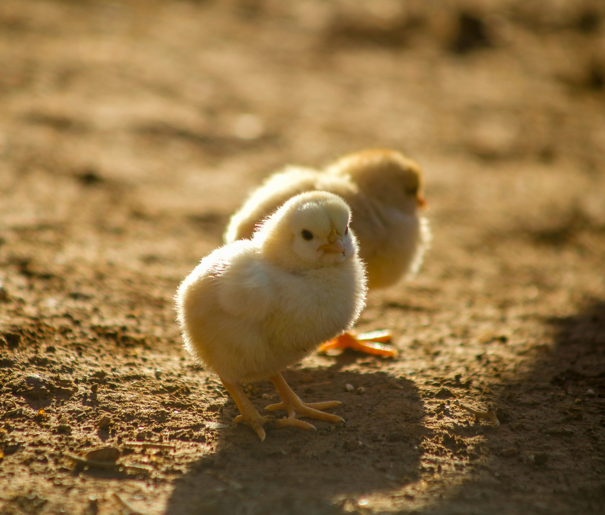
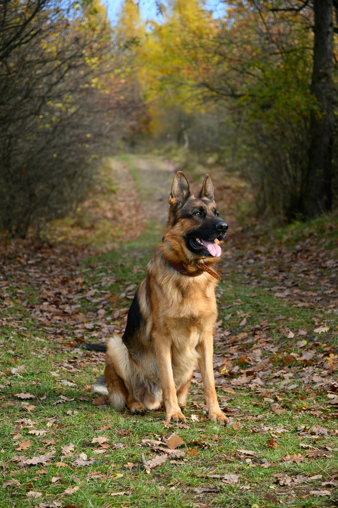
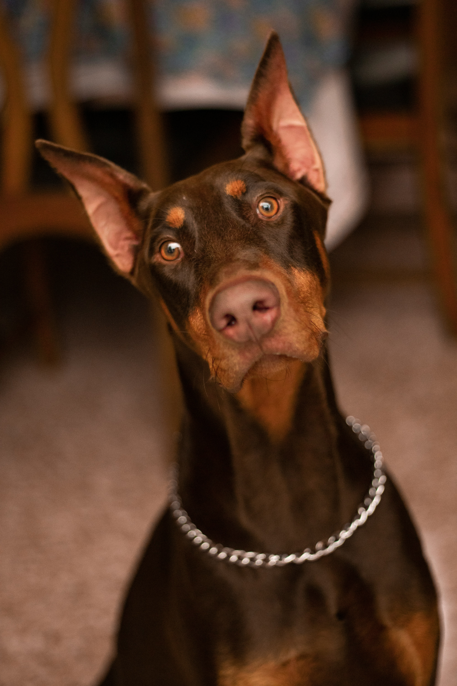
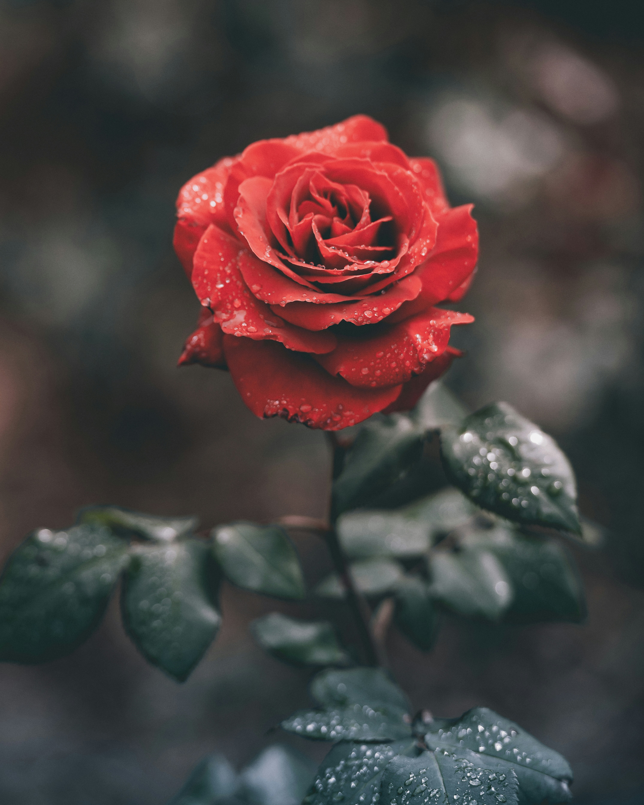

To ensure the delivery of high quality animal and environmental services.

Buying Greenland in-house hatched chicks is one of the best investments a poultry keeper can make because it guarantees superior health, strict quality control, and minimized stress for the birds. Unlike chicks from massive commercial brokers, in-house hatched chicks are born and raised in a single, controlled environment.

The German Shepherd Dog is a large, athletic, and noble working breed known for its high intelligence, loyalty, and versatility. Originally bred in the late 1800s for herding and police work, they stand 22 to 26 inches tall at the shoulder, weigh between 50 and 90 pounds, and feature a dense double coat.

The Doberman Pinscher is a sleek, muscular, and athletic medium-large dog breed originally developed in late 19th-century Germany by Karl Friedrich Louis Dobermann. Standing 24 to 28 inches tall and weighing between 60 and 100 pounds, they are renowned for their high intelligence, loyalty, and fearless protective nature.
A rose is a woody perennial flowering plant known for its velvety soft petals, thorny stems, glossy green leaves, and rich, sweet fragrance. Often called the queen of flowers, roses grow in a wide spectrum of shades—including red, pink, yellow, white, and orange—and carry deep historical and emotional meaning.
